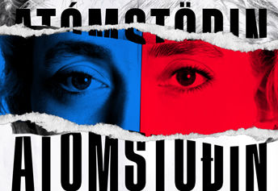

Atóðinn gagnrýni
Inngangur – Ég skrifaði þetta eftir að hafa lesið bókina og þegar ég var bara búin með fjóra kafla leist mér ekki á bókina því ég var eins tengdur persónunar.
Meiginmál - Atómstöðinn var skrifuð í einstökum stíll, hann fór eftir sínar eigin stafsetninga reglur og þegar hann fékk kvartanir. Þá skrifaði hann grein með fullkomna íslensku og yfirlýsti að þetta var leiðin, sem hann fannst rétastur. Að mínumati þá hafði hann nokun vejin rétt fyrir sig. Að mínu mati er það sem hann skrifaði mjög spenandi, Mér líkaði ekki ritsílinn hans. En ég sé alveg að ef ég myndi lesa meiri í hans stíl. Sagan fjallar um hluti sem voru mjög umdeild mál fyrir þann tíma, sem upphelds í dag líka. Bókin  fjallar um pólitík, Hvað er island virði, samför á milli Ameríkana og fóstur eiðingar. Mér fannst allir charecterinir vitlausir nema Ugla og Orgel kennarin. Allir frá guðana, börninn og fólkið í bænum, Maður gæti sagt að allt hafi farið suður síðan hún er að norðan. En allt í allt þá gef ég þetta þrjár af fimm sjötnur, því mér langar ekki að lesa meiri með þennan ritstýl. Þótt að ég gæti aðlagast honum og ég er ekki sá besti í stafsetningu eða málfræði, þá hef ég ekki áhuga á því. Þegar ég var búin með bókinna fannst mér að sagan hafi mjög littlan boðskap og aðalega ætluð til að fá viðbrögð, síðan þessi mál fjölluð um í bókina voru littið niður á. Þetta sérst í tímarit mál og menningar árið 1948, hvar það er sagt „Hvað' er það' þá í þessari nýju hók Halldórs sem liefur komið mönnum til að hlaupa svona út undan sér?“. þannig bókinn hefur haft áhrif og fylti væntingar um bækur hans síðan hann van nóbelsverðlaun fyrir bókmentir, sjö árum eftir að hann skrifaði atómstöðina.
Lokaorð - Ég mundi ekki mæla með atómsöðina síðan hún er þanig bók sem maður líkar við, hattar eða ruglar man útaf ritstýl. Sögu þráðurinn var mikið um hana uglu sem líkaði við því að hún var eitt af upáhalds persónunar í söguna. Því þú sást að hún fannst vænt um alla í kringum sig, annars voru flest allir frekar miklir aular, kanski fyrir utan orgel kennarinn. Ég er með reikning á vefsíðu sem heittir good reads og þar geturu skráð niður hvar þú ert í bók eða hvernig þér leist á bókina. Ég ákvað á að gefa þessari bók þrjár stjörnur af fimm því mér líkaði við að fylgjast með pólitíkina, líf sögupersónunar og brandararnir. Pólitíkin var miklu fjölbreytari meðan við í dag, allar sögupersónuna frekar furðulegegar en það virkar. Mér fannst brandarnir skemtilegir, ekki því ég náði brandarana en þegar það var útskýrt þá til mín, fannst mér það fyndið hversu oft þeir voru ó fyntnir. Síðan árið 1984 kom bíomynd. Ég hef ekki horft á hana en mynda halda að það hafi orðið góð mynd, síðan ritstýllinn hans Haldórar gefur gott insæi á hvernig hreymur eða orðinn séu útöluð.